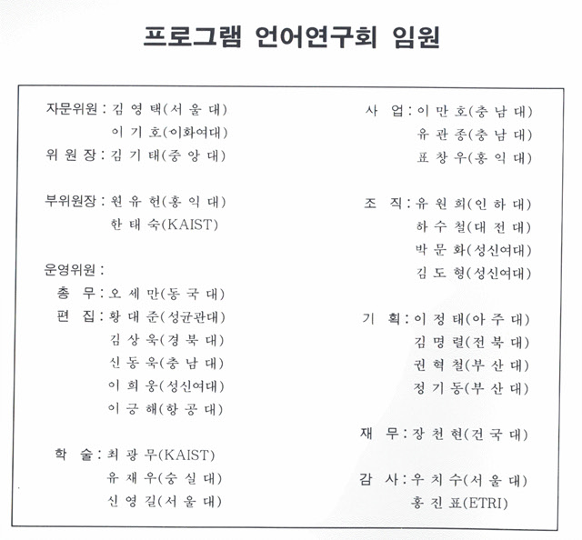
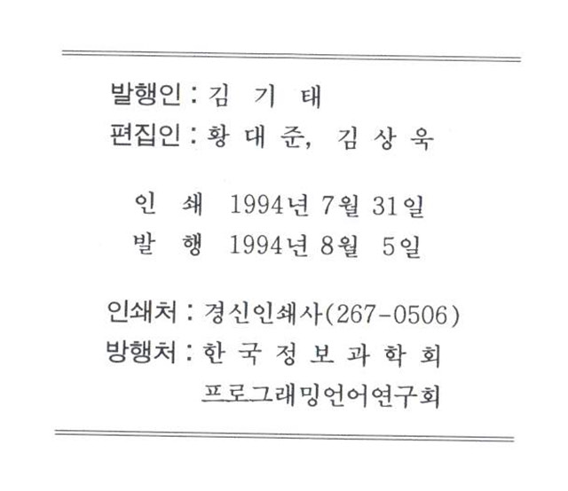

프로그래밍언어연구회지 제8권 제1호 (1994년 8월)
권두언:
황대준
시각 언어와 시스템에 관한 워크샵
- COSCRIPT: Visual Script on Multimedia Data Processing
송동호 (ETRI)
- Visual Language 에서의 의미 관계
권혁철 (부산대학교)
- 객체 중심 시각 언어 및 시스템: ScreenPlay
김상욱 (경북대학교)
새로운 프로그래밍 언어소개
- TCL (Tool Command Language)
조창식 (경북대학교)
연구실 소개
- 경북대학교 전자계산기공학과 컴퓨터 언어 연구실
경과보고


프로그래밍언어 연구회